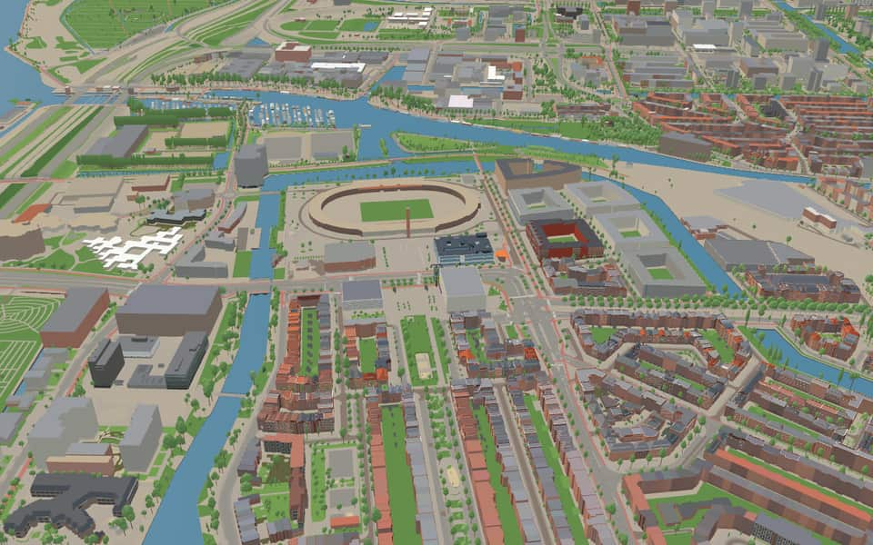
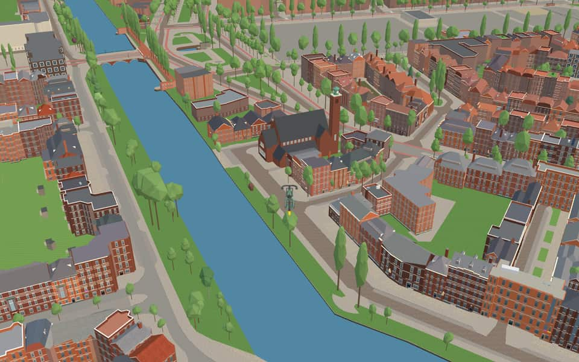
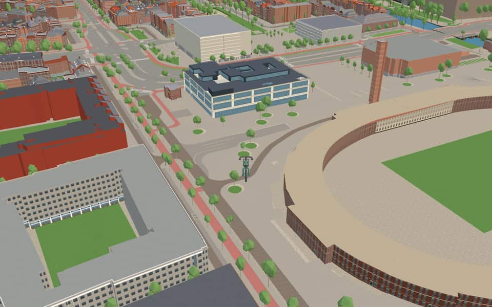
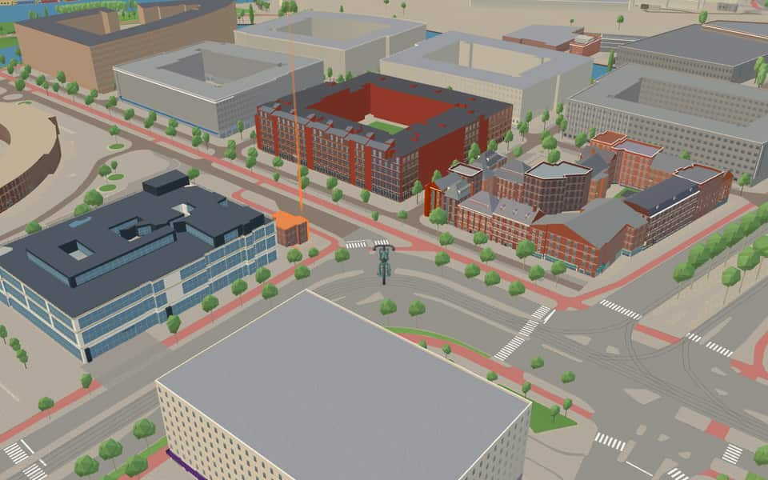

Quarter in Oud-Zuid
Stadionbuurt
Stadionbuurt is a neighborhood of Amsterdam, Netherlands. en.wikipedia.org
The name. Named after Harry Elte's national stadium, not Jan Wils's Olympic Stadium. nl.wikipedia.org
Ride Stadionbuurt3 modelled buildings · 36 facts · 59 name stories


In the game
Frames from a ride through Stadionbuurt.




6 more photos of Stadionbuurt

.jpg){kind=link}


Built here
Buildings modelled one by one for the ride.
Willem de Zwijgerkerk
Beta Boulders
OBA Olympisch Kwartier, Laan der Hesperiden 18, Amsterdam (2005; library in the ground floor of a brick housing block, one pand)
Did you know
Trivia the ride can show you here.
- The name refers to Harry Elte’s old national stadium, rather than the later Olympic Stadium. Wikipedia
- Its housing plan included more than 1,750 homes to help relieve Amsterdam’s housing shortage. Wikipedia
- Monument Indië-NederlandFunds remaining after a mausoleum's completion paid for this monument in Amsterdam and another in Batavia. en.wikipedia.org
- Monument Indië-NederlandArchitect Gijsbert Friedhoff and sculptor Frits van Hall won the contest to design this structure. en.wikipedia.org
- Monument Indië-NederlandA female figure flanked by two lions symbolizes Dutch supremacy over conquered peoples of the East Indies. en.wikipedia.org
- Monument Indië-NederlandPolitical pressure forced a name change to Monument Indië-Nederland in 2004. en.wikipedia.org
- OlympiahuisDemolition threats in the early 2000s forced the cottage to be moved just a few meters. nl.wikipedia.org
- OlympiahuisSpecial Olympic stamps were issued there from March to September 1928. nl.wikipedia.org
- OlympiahuisA temporary post office on the grounds applied a special stamp to these mail items. nl.wikipedia.org
- Willem de ZwijgerkerkStained glass windows by Kees Kuiler depict Christmas, Easter, and Pentecost. nl.wikipedia.org
- Willem de ZwijgerkerkGerrit van Leeuwen built the organ, which was restored in 2008. nl.wikipedia.org
- Aldo van EyckbrugAlthough dated 1937, the bridge was not ready for use until a year later due to construction delays. nl.wikipedia.org
- Jan WilsbrugJan Wilsbrug honors architect Jan Wils, who designed the nearby Olympic Stadium and two famous Citroën buildings. en.wikipedia.org
- Nieuwe MeersluisThe current lock opened on July 1, 1942 to replace the older Overtoomse Sluis. nl.wikipedia.org
22 more facts
- Nieuwe MeersluisA new control center was later built directly halfway over the old lock keeper's post. nl.wikipedia.org
- Nieuwe MeersluisSliding sluice doors on rails also serve as the carriers for bridge decks. nl.wikipedia.org
- Noorder AmstelkanaalThe canal is absent from street name and postal code books because its banks have different names. nl.wikipedia.org
- Noorder AmstelkanaalTram line 5 crosses the canal on the Timo Smeehuijzenbrug. nl.wikipedia.org
- Noorder AmstelkanaalThe Lyceumbrug connects the Amsterdam Lyceum to Olympiaplein. nl.wikipedia.org
- StadiongrachtThe northern section now runs dry because it lost its direct water connection to the Noorder Amstel Canal. nl.wikipedia.org
- StadiongrachtA small lock exists here but no longer functions as one since water levels are identical on both sides. nl.wikipedia.org
- StadiongrachtThe canal's name does not appear in postal codes, while its quays carry distinct names like Afroditekade. nl.wikipedia.org
- Zuider AmstelkanaalTram lines 5 and 24 cross the canal on two of its eight bridges. nl.wikipedia.org
- IJsbaanpadThe road was named IJsbaanpad in 1949 after the nearby ice club field submerged in winter. nl.wikipedia.org
- IJsbaanpadThe former site of the ice club is now occupied by tennis courts. nl.wikipedia.org
- IJsbaanpadBridge 999, the white Post-Print Happiness Bridge, has connected the street to the Olympic Stadium since 2009. nl.wikipedia.org
- ParnassuswegIn the 1950s, the road was extended toward Buitenveldert to reach the A10 ring road. nl.wikipedia.org
- ParnassuswegSince 1972, the road has been raised to create a highway-like appearance with lower paths for cyclists and pedestrians. nl.wikipedia.org
- ParnassuswegTram line 5 began operating on the southern section of the street in 2008. nl.wikipedia.org
- StadionpleinArchitects designed six new closed blocks using styles based on the Amsterdam School and Berlage. nl.wikipedia.org
- StadionpleinPart of Stadionplein was renamed Laan der Hesperiden due to the district's construction. nl.wikipedia.org
- StadionpleinArchitect Berlage did not design this square despite common belief. nl.wikipedia.org
- StadionpleinTwo Febo snack bars stood in former ticket offices from 1971 until 2013. nl.wikipedia.org
- StadionwegArchitect Harry Elte designed the original stadium that gave Stadionweg its name. nl.wikipedia.org
- StadionwegThe path is broken into three parts by two interruptions at Minervaplein and Olympiaplein. nl.wikipedia.org
- StadionwegStadionweg leads directly to the Olympic Stadium. nl.wikipedia.org
Names on the map
Where the canal, bridge and street names come from.
Canals and water
- Noorder AmstelkanaalA canal linking the Amstel and the Schinkel.
- StadiongrachtRefers to the neighbouring Olympic Stadium.
- Zuider AmstelkanaalThe southern part of the Amstelkanaal, referring to the river Amstel.
2 other canals without a recorded story
Nieuwe Meersluis · Stadionsluis
Bridges
- Aldo van EyckbrugAldo van Eyck (1918-1999) is best known as the architect of the Burgerweeshuis on the nearby IJsbaanpad. His colleagues named him 'Dutch architect of the century'.Bridge 413: a steel bridge for road traffic, dated 1938 in the city's bridge register.
- Jan WilsbrugNamed after Jan Wils (1891-1972), architect of the Olympic Stadium and the two Citroën buildings on the Stadionplein. He also designed the City Theatre on the Kleine-Gartmanplantsoen.Bridge 2247: a reinforced concrete bridge for cyclists, dated 2007 in the city's bridge register.
- Na Druk GelukbrugNamed after the farm Na Druk Geluk ('after hardship, good fortune'), which belonged to Dirk Beukeboom and stood on the Amstelveenseweg until the early twentieth century, roughly where the block between the Stadionplein, Stadionkade, Jasonstraat and Argonautenstraat is now. It had to make way for the Olympic Stadium and the Olympic neighbourhood. The bridge, between the Olympic Stadium and the IJsbaanpad and designed by René van Zuuk, was named by local residents in a competition.Bridge 696: a bridge for road traffic, dated 2009 in the city's bridge register.
1 other bridge without a recorded story
Godenbrug
Streets
- AchillesstraatThe Greek hero who fell in the Trojan War (1195 to 1184 BC) when he was struck in his most vulnerable spot, his heel (the Achilles tendon).
- AfroditekadeFigure from Greek mythology, goddess of love, fertility and beauty. Her equivalent in Roman mythology is Venus.
- AgamemnonstraatThe legendary figure who led the Greeks against Troy in the Trojan War (1195 to 1184 BC).
- AmazonenstraatThe female warriors of Greek mythology.
- AmstelveensewegVillage. Before 1 January 1964 the municipality was called Nieuwer-Amstel. Before it was widened in 1898, the stretch of the road along the Vondelpark as far as the Overtoom was called Dubbele Buurt.
- ApollolaanApollo was one of the principal gods of Greek mythology: god of the sun, music and poetry, and leader of the Muses. The widened section of this avenue, near the Minervalaan, bore the name August Allebéplein until 1958.
- ArgonautenstraatGreek sea heroes who sailed out on the ship Argo to fetch the Golden Fleece.
- ArtemisstraatGoddess from Greek mythology, daughter of the supreme god Zeus and twin sister of Apollo. The Latin name of Artemis is Diana.
- Bernard KochstraatMusician (1791-1858) and conductor of the Italian Opera in Amsterdam. His compositions include the opera 'Moeder de Gans' (Mother Goose).
- BertelmanpleinJan Georg Bertelman (1782-1854), composer of cantatas and a requiem.
- BertelmanstraatJan Georg Bertelman (1782-1854), composer of cantatas and a requiem.
- BurgerweeshuispadNamed after the Burgerweeshuis (citizens' orphanage), which from 1580 to 1960 occupied the buildings of today's Amsterdam Historical Museum on the Kalverstraat, and then moved to the IJsbaanpad. The orphanage took its name from the fact that it admitted only children whose parents could be shown to have been official citizens (burgers) of the city.
41 more streets with a story
- Cornelis KrusemanstraatPainter (1797-1857) of historical and biblical scenes.
- Des PrésstraatJosquin des Prés or Després (1450-1521), French composer and choirmaster (masses and chansons).
- DiscusstraatA throwing disc, used in discus throwing at the Greek and Roman games.
- DonarstraatThe Germanic god of thunder.
- EosstraatA figure from Greek mythology, also known as Aurore or Aurora: the goddess of sunrise and the dawn.
- Gerrit van der VeenstraatGerrit Jan van der Veen (1902-1944), resistance fighter and sculptor by profession, who won the Prix de Rome for his sculpture. He took an active part in the resistance. Van der Veen was one of the instigators of the attack on the population register (27 March 1943) and was executed by firing squad in the dunes near Overveen. The street was previously called Euterpestraat, after the muse of music and poetry, and during the occupation of 1940-1945 was notorious because the German Sicherheitsdienst (SD) was based in the girls' secondary school (Meisjes-HBS).
- HectorstraatA figure from Greek mythology: army commander, son of the king of Troy.
- HerculesstraatIn Greek mythology Hercules is the strong hero, the son of the supreme god Zeus.
- HestiastraatA figure from Greek mythology: the eldest daughter of Chronos and Rhea and sister of Zeus, goddess of the hearth and of hospitality.
- HygiëapleinThe goddess of health in Greek mythology.
- HygiëastraatThe goddess of health in Greek mythology.
- IJsbaanpadNamed after the ice rink on the IJsclub grounds, to which the road leads.
- JachthavenwegThe road runs past the marinas on the Nieuwe Meer.
- Jan WilsbrugNamed after Jan Wils (1891-1972), architect of the Olympic Stadium and the two Citroën buildings on the Stadionplein. He also designed the City Theatre on the Kleine-Gartmanplantsoen.
- JasonstraatA figure from Greek mythology, leader of the Argonauts around 1350 BC.
- Laan der HesperidenFigures from Greek mythology: seven nymphs who guard the tree with the golden apples in the land of Hesperia.
- LyceumbrugThe name of this bridge refers to the nearby Amsterdams Lyceum (a secondary school).
- MarathonwegOriginally a village on the east coast of Attica (Greece), where the Persians were defeated in 490 BC. A messenger, by tradition Pheidippides, ran with the news to Athens (42 km), and the marathon race is named after this event.
- Na Druk GelukbrugNamed after the farm Na Druk Geluk ('after hardship, good fortune'), which belonged to Dirk Beukeboom and stood on the Amstelveenseweg until the early twentieth century, roughly where the block between the Stadionplein, Stadionkade, Jasonstraat and Argonautenstraat is now. It had to make way for the Olympic Stadium and the Olympic neighbourhood. The bridge, between the Olympic Stadium and the IJsbaanpad and designed by René van Zuuk, was named by local residents in a competition.
- OlympiakadeThe sacred site in ancient Greece where the Olympic Games were first held, in 776 BC.
- OlympiapleinThe sacred site in ancient Greece where the Olympic Games were first held, in 776 BC.
- OlympiastraatThe sacred site in ancient Greece where the Olympic Games were first held, in 776 BC.
- OlympiawegThe sacred site in ancient Greece where the Olympic Games were first held, in 776 BC.
- Olympisch StadionThe sacred site in ancient Greece where the Olympic Games were first held, in 776 BC.
- ParnassuswegA mountain in Greece, in Greek mythology the home of Apollo and the Muses. Today used figuratively for the realm of poetry.
- PatroclosstraatA Greek hero of the Trojan War (Patroclus), sung by Homer.
- Piet KranenbergpadNamed after Piet Kranenberg, one of the people who saved the Olympic Stadium beside this path. In 1996, with Bram Mulder and the stadium director Otto Roffel, he set up the rescue and operating plan that led to its renovation, begun in 1998.
- Pieter LastmankadeAmsterdam painter (1583-1633), among other things of biblical scenes, and teacher of Rembrandt. By council decision of 10 January 1923 part of the quay was renamed Jan van Goyenkade.
- RheastraatA figure from Greek mythology, one of the Titans, wife of Cronus and mother of Hestia, Hera, Demeter, Poseidon, Hades and Zeus.
- SimsonstraatThe hero of the Israelites in the Old Testament (Samson), a symbol of strength, whose beloved Delilah robbed him of his hair and so of his strength.
- SpeerstraatThe implement (spear, javelin) for javelin throwing, already practised by the ancient Greeks.
- SportstraatThe street lies among streets named after the Greek games and after figures from antiquity famous for their strength.
- StadionkadeSince the Greeks a stadium has been a sports ground with tiers of seats rising around it. The road runs past where the stadium stood when it was named in 1922 (level with today's Amazonestraat). The Olympic Stadium (on the square) was built for the 1928 Olympic Games.
- StadionpleinSince the Greeks a stadium has been a sports ground with tiers of seats rising around it. The road runs past where the stadium stood when it was named in 1922 (level with today's Amazonestraat). The Olympic Stadium (on the square) was built for the 1928 Olympic Games.
- StadionwegSince the Greeks a stadium has been a sports ground with tiers of seats rising around it. The road runs past where the stadium stood when it was named in 1922 (level with today's Amazonestraat). The Olympic Stadium (on the square) was built for the 1928 Olympic Games.
- TheseusstraatIn Greek mythology the hero of Attica who, with Ariadne's help, overcame the Minotaur.
- TurnerstraatA gymnast, practitioner of gymnastics, one of the old Greek sports.
- Van Tuyll van SerooskerkenpleinFrederik W.C.H. Baron van Tuyll van Serooskerken (1851-1924), the first chairman of the Dutch Olympic Committee.
- Van Tuyll van SerooskerkenwegFrederik W.C.H. Baron van Tuyll van Serooskerken (1851-1924), the first chairman of the Dutch Olympic Committee.
- WillaertstraatAdriaen Willaert (1485-1562), Southern Netherlandish composer, active in Venice from 1527, where he founded the so-called Venetian school of music.
- WodanstraatWodan was the chief god of the Germanic peoples.
1 other street without a recorded story
Godenbrug